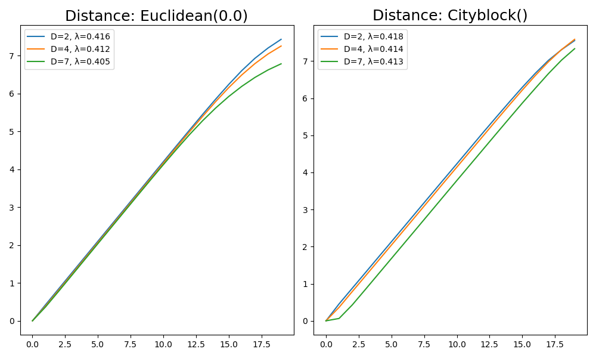
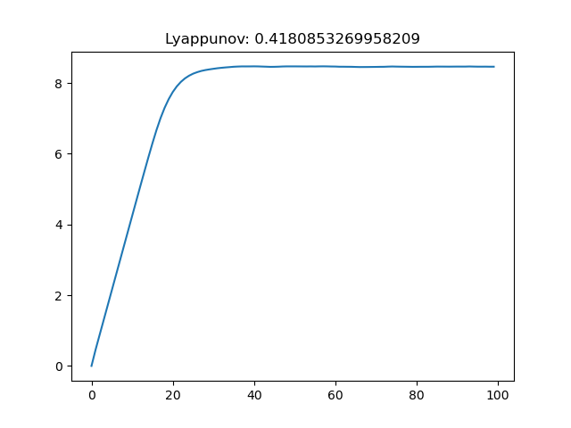
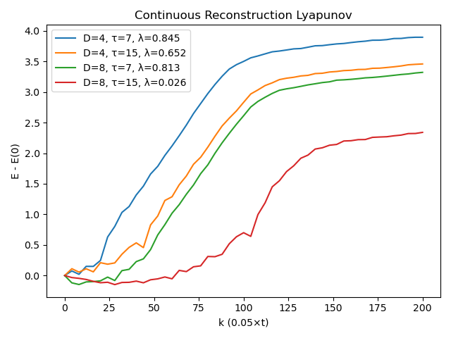
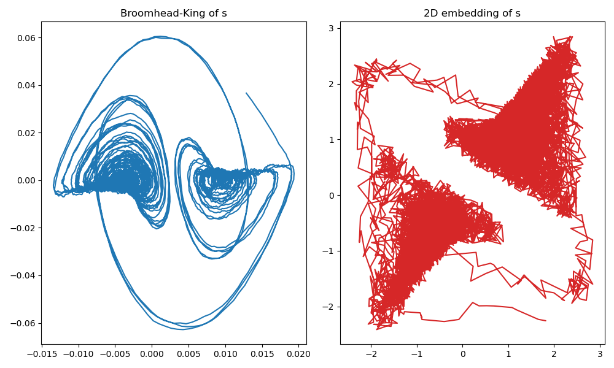

Nonlinear Timeseries Analysis
Numerical Lyapunov Exponent
Given any timeseries, one can first embed it using delay coordinates, and then calculate a maximum Lyapunov exponent for it. This is done with
ChaosTools.numericallyapunov — Functionnumericallyapunov(R::Dataset, ks; refstates, w, distance, ntype)Return E = [E(k) for k ∈ ks], where E(k) is the average logarithmic distance between states of a neighborhood that are evolved in time for k steps (k must be integer). Typically R is the result of delay coordinates of a single timeseries.
Keyword Arguments
refstates = 1:(length(R) - ks[end]): Vector of indices that notes which states of the reconstruction should be used as "reference states", which means that the algorithm is applied for all state indices contained inrefstates.w::Int = 1: The Theiler window, which determines whether points are separated enough in time to be considered separate trajectories (see[Skokos2016] andneighborhood).ntype::AbstractNeighborhood = FixedMassNeighborhood(1): The method to be used when evaluating the neighborhood of each reference state. SeeAbstractNeighborhoodorneighborhoodfor more info.distance::Metric = Cityblock(): The distance function used in the logarithmic distance of nearby states. The allowed distances areCityblock()andEuclidean(). See below for more info.
Description
If the dataset/reconstruction exhibits exponential divergence of nearby states, then it should clearly hold
for a well defined region in the k axis, where $\lambda$ is the approximated maximum Lyapunov exponent. $\Delta t$ is the time between samples in the original timeseries. You can use linear_region with arguments (ks .* Δt, E) to identify the slope (= $\lambda$) immediatelly, assuming you have choosen sufficiently good ks such that the linear scaling region is bigger than the saturated region.
The algorithm used in this function is due to Parlitz[Skokos2016], which itself expands upon Kantz [Kantz1994]. In sort, for each reference state a neighborhood is evaluated. Then, for each point in this neighborhood, the logarithmic distance between reference state and neighborhood state is calculated as the "time" index k increases. The average of the above over all neighborhood states over all reference states is the returned result.
If the Metric is Euclidean() then use the Euclidean distance of the full D-dimensional points (distance $d_E$ in ref.[Skokos2016]). If however the Metric is Cityblock(), calculate the absolute distance of only the first elements of the m+k and n+k points of the reconstruction R (distance $d_F$ in ref.[Skokos2016]).
The function numericallyapunov has a total of 4 different approaches for the algorithmic process, by combining 2 types of distances with 2 types of neighborhoods.
Example of Numerical Lyapunov computation
using DynamicalSystems, PyPlot
ds = Systems.henon()
data = trajectory(ds, 100000)
x = data[:, 1] #fake measurements for the win!
ks = 1:20
ℜ = 1:10000
fig = figure(figsize=(10,6))
for (i, di) in enumerate([Euclidean(), Cityblock()])
subplot(1, 2, i)
ntype = FixedMassNeighborhood(2)
title("Distance: $(di)", size = 18)
for D in [2, 4, 7]
R = embed(x, D, 1)
E = numericallyapunov(R, ks;
refstates = ℜ, distance = di, ntype = ntype)
Δt = 1
λ = linear_region(ks.*Δt, E)[2]
# gives the linear slope, i.e. the Lyapunov exponent
plot(ks .- 1, E .- E[1], label = "D=$D, λ=$(round(λ, digits = 3))")
legend()
tight_layout()
end
end
Bad Time-axis (ks) length
This simply cannot be stressed enough! It is just too easy to overshoot the range at which the exponential expansion region is valid!
Let's revisit the example of the previous section:
ds = Systems.henon()
data = trajectory(ds, 100000)
x = data[:, 1]
length(x)100001The timeseries of such length could be considered big. A time length of 100 seems very small. Yet it turns out it is way too big! The following
ks = 1:100
R = embed(x, 2, 1)
E = numericallyapunov(R, ks, ntype = FixedMassNeighborhood(2))
fig = figure()
plot(ks .- 1, E .- E[1])
title("Lyappunov: $(linear_region(ks, E)[2])")
Notice that even though this value for the Lyapunov exponent is correct, it happened to be correct simply due to the jitter of the saturated region. Since the saturated region is much bigger than the linear scaling region, if it wasn't that jittery the function linear_region would not give the scaling of the linear region, but instead a slope near 0! (or if you were to give bigger tolerance as a keyword argument)
Case of a Continuous system
The process for continuous systems works identically with discrete, but one must be a bit more thoughtful when choosing parameters. The following example helps the users get familiar with the process:
using DynamicalSystems, PyPlot
ntype = FixedMassNeighborhood(5) #5 nearest neighbors of each state
ds = Systems.lorenz()
# create a timeseries of 1 dimension
dt = 0.05
x = trajectory(ds, 1000.0; dt = dt)[:, 1]20001-element Array{Float64,1}:
0.0
4.285178117517708
8.924780522479637
15.012203311102235
20.05533894475613
18.062350952804728
9.898343637398332
2.199113375749754
-2.6729722259323863
-5.33812377718313
⋮
-3.810825689423999
-4.900396720248087
-6.241066898514638
-7.940150591858717
-9.900960829002475
-11.678879507784437
-12.495362895268917
-11.76970885072464
-9.786325967697445We know that we have to use much bigger ks than 1:20, because this is a continuous case! (See reference given in numericallyapunovs)
ks1 = 0:2000:200and in fact it is even better to not increment the ks one by one but instead do
ks2 = 0:4:2000:4:200Now we plot some example computations
figure()
for D in [4, 8], τ in [7, 15]
r = embed(x, D, τ)
# E1 = numericallyapunov(r, ks1; ntype = ntype)
# λ1 = linear_region(ks1 .* dt, E1)[2]
E2 = numericallyapunov(r, ks2; ntype = ntype)
λ2 = linear_region(ks2 .* dt, E2)[2]
# plot(ks1,E1.-E1[1], label = "dense, D=$(D), τ=$(τ), λ=$(round(λ1, 3))")
plot(ks2,E2.-E2[1], label = "D=$(D), τ=$(τ), λ=$(round(λ2, digits = 3))")
end
legend()
xlabel("k (0.05×t)")
ylabel("E - E(0)")
title("Continuous Reconstruction Lyapunov")
tight_layout()
As you can see, using τ = 15 is not a great choice! The estimates with τ = 7 though are very good (the actual value is around λ ≈ 0.89...).
Broomhead-King Coordinates
ChaosTools.broomhead_king — Functionbroomhead_king(s::AbstractVector, d::Int) -> U, S, VtrReturn the Broomhead-King coordinates of a timeseries s by performing svd on the so-called trajectory matrix with dimension d.
Description
Broomhead and King coordinates is an approach proposed in [Broomhead1987] that applies the Karhunen–Loève theorem to delay coordinates embedding with smallest possible delay.
The function performs singular value decomposition on the d-dimensional trajectory matrix $X$ of $s$,
where $x := s - \bar{s}$. The columns of $U$ can then be used as a new coordinate system, and by considering the values of the singular values $S$ you can decide how many columns of $U$ are "important". See the documentation page for example application.
This alternative/improvement of the traditional delay coordinates can be a very powerful tool. An example where it shines is noisy data where there is the effect of superficial dimensions due to noise.
Take the following example where we produce noisy data from a system and then use Broomhead-King coordinates as an alternative to "vanilla" delay coordinates:
using DynamicalSystems, PyPlot
ds = Systems.gissinger()
data = trajectory(ds, 1000.0, dt = 0.05)
x = data[:, 1]
L = length(x)
s = x .+ 0.5rand(L) #add noise
U, S = broomhead_king(s, 40)
summary(U)"19962×40 Array{Float64,2}"Now let's simply compare the above result with the one you get from doing a "standard" call to embed:
fig=figure(figsize= (10,6))
subplot(1,2,1)
plot(U[:, 1], U[:, 2])
title("Broomhead-King of s")
subplot(1,2,2)
R = embed(s, 2, 30)
plot(columns(R)...; color = "C3")
title("2D embedding of s")
tight_layout()
we have used the same system as in the Delay Coordinates Embedding example, and picked the optimal delay time of τ = 30 (for same dt = 0.05). Regardless, the vanilla delay coordinates is much worse than the Broomhead-King coordinates.
Nearest Neighbor Prediction
Nearest neighbor timeseries prediction is a method commonly listed under nonlinear timeseries analysis. This is not part of DynamicalSystems.jl, because in JuliaDynamics we have a dedicated package for this, TimeseriesPrediction.jl.
- Skokos2016Skokos, C. H. et al., Chaos Detection and Predictability - Chapter 1 (section 1.3.2), Lecture Notes in Physics 915, Springer (2016)
- Kantz1994Kantz, H., Phys. Lett. A 185, pp 77–87 (1994)
- Broomhead1987D. S. Broomhead, R. Jones and G. P. King, J. Phys. A 20, 9, pp L563 (1987)